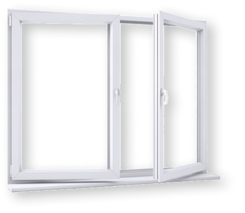

<section class="section_Pcomponent">
    <div class="container">
        <h3 class="Pcomponent__titel">Комплектующие окон</h3>
        <div class="Pcomponent__wrapper-switched">
            <button class="wrapper-switched__btn">Стеклопакет</button>
            <button class="wrapper-switched__btn">Подоконник</button>
            <button class="wrapper-switched__btn">Ламинация</button>
        </div>
        <div class="Pcomponent__wrapper-content glass windowsill lamination">
            <div class="wrapper-content__img">
                
            </div>
            <h3 class="wrapper-content__title">Немецкая фурнитура</h3>
            <p class="wrapper-content__text">
                Используемая в изделиях фурнитура не только позволяет защитить дом от
                непогоды и шума, но также обезопасить любопытных детей от неприятных последствий их игр у окна и
                защитить семью от вторжения посторонних лиц.
            </p>
        </div>
    </div>
</section>